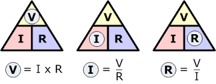
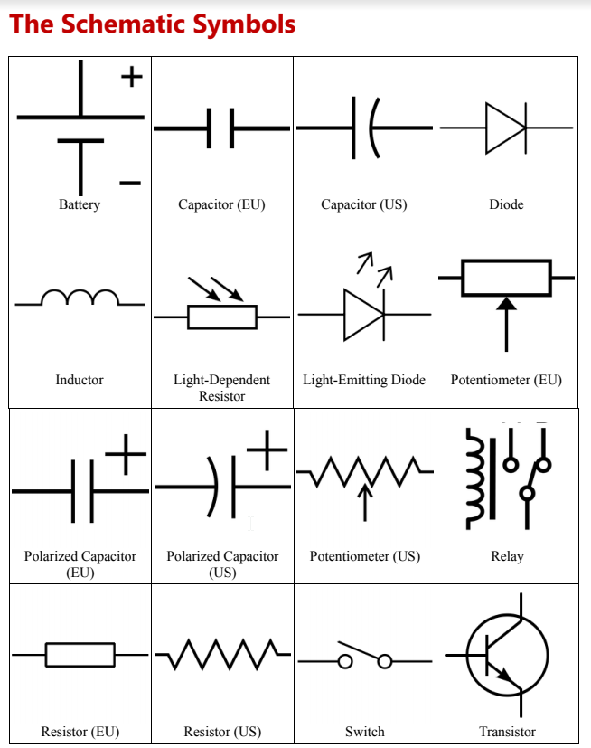
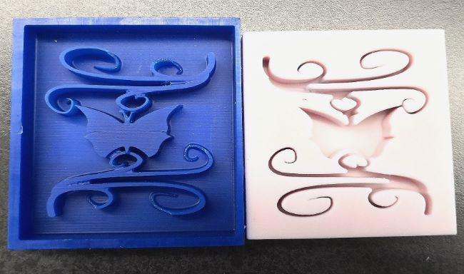

In class today, we learn the basic knowledge about electric circuit----the OHM's Law which basically means the voltage across an conductor is directly propotionally to the current through it. We also learn the symbols for resistors, LEDs, switches, capacitors and the other things of the electric circuit.


Since I went to model UN on Friday, I missed the class of soldering. After I came back, Mr.Gerber gave me a electric circuit which is about the voice controlled LED light. If I solder every parts of the circuit right, the brightness of LEDs wwould change according to how loud my voice is. The metal I used for soldering is tin which is unbelievablly soft and malleable. I turned on the the soldering station first and it would heat up in a few seconds. Then I needed to use the pen-like part of the soldering station to melt the tin in order to solder things such as resistors and LEDs on the circuit. The soldering part is acutally really interesting. However, I soldered the integrated circuits on the cricult in a wrong way because I didn't know that the special integrated circuit is consisted of two parts. One of the inconvinience abotu soldering is that once you soldered, you can't really redo it. Next time I need to read the circuit diagram more carefully when I am doing circuit.
